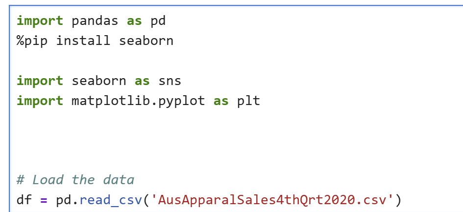
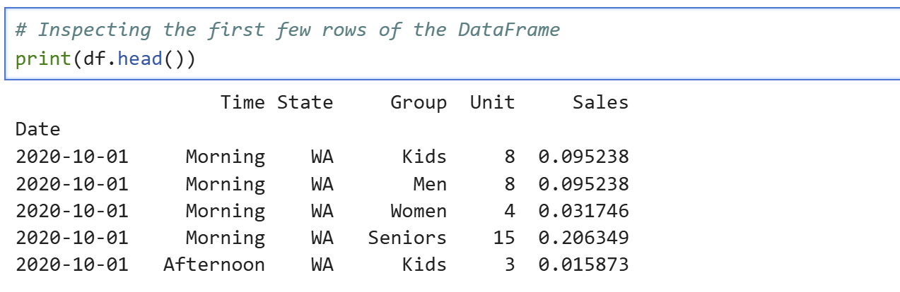

Project Overview
This Python project analyzes quarterly apparel sales across Australian states. It aims to extract actionable insights through wrangling, summarization, and visualization techniques.
Sales Analysis – Python Project
This project explores apparel sales data in Australia during Q4 2020. Below is a step-by-step breakdown of the workflow including data cleaning, exploration, and insights using Python.
1. Load Dataset
2. Preview Data
3. DataFrame Info
4. Data Types
5. Nulls Check
6. Duplicates Check